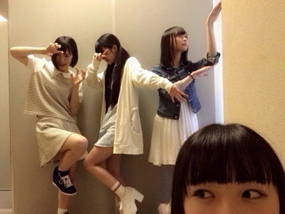

2014/0610Tue自分の居場所
みなさまこんばんわ！
更新空けてしまいました。
モバメばかりになってしまって
ブログを疎かにしてしまいました。
ブログを楽しみにしてくれてる方が
いるのにごめんなさい:(´◦ω◦｀):

6日のプリンシパルで
初めて二幕に選ばれました！
生カメラ担当日で、
唯一二幕に出られていない状況の中
皆さんの前で何を話したらいいのか
分からなくて、カメラがまわる前まで
悩んでいました。
らりんさんと花奈さんと寧々さんが
大丈夫大丈夫。無理しないでね。
って言ってくださって安心しました。
皆さんの目に私は見えているのか、一幕のオーディションも三幕のライブ中もずっと不安でした。
三幕のライブで、私は誰に向かって笑っているのか分からなくなることもあって、それでも泣かない泣かないって我慢して楽屋に帰っても平気な振りして
まだ大丈夫まだ大丈夫って言い聞かせてました。
泣きたくなかったけど、
皆さんに私の姿を見てもらえていると
思ったら自分の存在に気づいてもらえてるって嬉しくて不安が少しとれて涙が溢れました。
そして昨日の夜公演でも侍女3に選んでもらえました。モバメで話したからあえてブログでは伏せておきます！笑
そうそう！モバメといえば、この間からはじまりましたねー！
とっても楽しい♪モバメ♪
その時の感じた気持ちや感情を
メールでは結構送っています。
考えて考えて文を作ることも
大切だと思うけど、
そうすると回りくどくなってしまったり気持ちが変わってしまう事とか
あるから、私的にメールは
今のその時の私を知ってもらえるんじゃないかな！って思っています！
その分、ブログはきちんと気持ちを
整理して文書も整理して
書きたいとおもいます！
携帯鳴り止まない！
お仕事、学校が終わって携帯みたら
日奈子のばっかりじゃん！
って不愉快にさせてしまう事も
あるかと思いますが、
許してください(ノ_・。)
あと、モバメで開いて欲しいコーナーややってほしい事があったら
教えてください♪

りしゃこ
そしてたまっている質問返しを
前の前の前の前くらいのブログの質問から返して行きたいと思います！
なが～いので、飛ばしても大丈夫です！
きいちゃんにきいちゃおう
(同じような答えになってしまう質問は答えをまとめさせて頂きます。すみません(；д；))
 きいちゃんの好きなサイリウムの色は？
きいちゃんの好きなサイリウムの色は？→黄緑とピンクが日奈子のサイリウムカラーになってるよ！
一つ質問！日奈子は未央奈みたいに日付とかでコメント返しとかしないの～？してほしいな～なんて思ったりww→そうなんだよね！したいの！
でも、何番がいいのかなーと思って！
ひなこだから、1.7.5にしようかな！
よし、そうしよう！あまり当たらない！ってなったら、また変えるからとりあえずやってみよう！笑
このコーナーはなんていうコーナーにしようかな！誰かいい案ください！(；д；)笑
きぃちゃんは服のジャンルとかどういうのが好き？きいちゃんはどんな服のコーデが好きですか⁇
→自分が着る服でって事かな？
うーん。迷うな～。パーカーみたいなゆるいのも好きだし、ワンピースもすき！
でも、ワンピースとかトップスで
いつも買うのはほとんど襟がついてるの！だから、知らずと襟に惹かれてるのかもしれない♡笑
きいちゃんはメンバーの中だと誰とどこで洋服を買うことが多い？→メンバーとあんまりお買い物行かない！親とはよく行くよ！
109も好きだけど、結局いつもPARCOに行き着いて買うんだけどね♪
きいちゃんは犬の他に飼ってみたいペットいますかー？→恐竜の赤ちゃんとホワイトタイガーの赤ちゃんとシャチ！
きいちゃんファーストクラスみてる？？→みてますよ！ハラハラドキドキ面白いですよね！沢尻エリカさんキレイで可愛くて演技も上手で、
1リットルの涙の時からだいすき！
好きなアニメとかありますかー？→アニメね！好きなのは、パワーパフガールズみたいなの！♡
他にはCLANNADとかあの花とか、感動しますよね(；д；)ダンガンロンパは、途中でやめちゃった(｡-_-｡)
きいちゃんのオススメのドラマ教えてー！握手会でその話する！笑
→ドラマっていうのはいまやってるやつかな？今のならなんでも話せるよ！たぶん！笑
前にやってたドラマとかなら、
1リットルの涙、凄く好きだった♡
他にもたくさん好きなのあるから、お話する時好きなドラマ教えてね♪
きいちゃんはチャイナ服着ないんですか？(￣ー￣)見てみたい(^0_0^)
→チャイナドレスもってないんだよー(；д；)このへんで売ってる場所もわからないし、ネットで買ってサイズ合わなかったら嫌だし(；д；)でもやりたい(；д；)
最近チップの写真見てないから元気なチップ見たいな！笑→メールでも送ったチップ！
他にもチップを激写してくるから
いいの撮れたらのせますね！
きぃちゃんの黒髪ロング見て見たい！見せてくれる？w
→いまショートボブなのに、どうやって見せるんだーーー！私も、ロングだった時は二つ結びかおろしてか、ポニテしかやってなかったから、ロングにして巻いて見たり無造作ヘアしてみたいの。
きいちゃんのその可愛らしい涙袋の中にはなにがはいってるんですか？
→愛と夢と希望。。。
嘘だよ。。。
ずばり！眼球だよ！笑
でも、時々飴ちゃん入れたりする(｡-∀-｡)
きいちゃんは旅行先に必ず持ってくものってある？→バスタオル！とか、ふわふわした洋服！自分の家以外だと、なかなか寝付けられないから、家の匂いがしてるものを顔周りにおくの！したっけ、安心して寝れる！！！
好きなスポーツとかありますか？？自分も野球してたって言ったけどきぃちゃんは何のスポーツが好きなの？
きいちゃんの好きなスポーツはなんですか？
→スポーツは、なんでも結構すき！
走り高跳びと、長距離と水泳と棒高跳びと反復横跳び以外なら結構すき！！！
北野さんは文系と理系どちらを選びましたか？→生物が好きだから、理系にしたかったけど文系を選びました！笑
ひなちゃんが考える、二期生のなかで家族を作るなら！→
*お母さん→堀未央奈
*お父さん→山崎怜奈
*お母さん→堀未央奈
*お父さん→山崎怜奈
(未央奈は落ち着いてて、包容力もあってお母さんっぽい。れなちは、頭が良くて冷静だからお父さんっぽい。でも1番の理由は未央奈とれなちの夫婦組み合わせが面白いから。)
*お姉ちゃん→新内眞衣
(いつも私の事を気にかけてくれて、頼りになるお姉ちゃん！)
*お兄ちゃん→米徳京花
(真面目だけど、いつも突然壊れるところとか、笑方が大胆だから！)
*いもうと→寺田蘭世
(顔可愛いし、いつもぴょんぴょんしてるし、とにかく洋服が小さいっ！)
*弟→渡辺みり愛
(妹にしちゃ生意気ちゃんだから、弟！ それになんてったって、公式的にも弟。アンダーライブを見てる時に蘭世とみり愛がずっと日奈子の腕にくっついてたの可愛すぎた♡)
*親友(何でも話せる仲の人！)→皆
*相方→シンメなら堀未央奈
*双子→双子いない！けど、純奈は同い年の兄弟になってみたい。笑
*彼氏→佐々木琴子
(学ラン着せたい！ただそれだけ！)
*彼女→矢田里沙子
(おっととした空気感と天然な感じが、本当に癒し！二期生の聖母！)
*先生→伊藤かりん
(しっかりしてて、周りのことを色々見てくれてるから！でも居残り勉強とかも容赦なさそう！笑)
ちなみにこのルーズヴェルトは棍棒外交で有名なセオドアルーズヴェルトではなくて世界恐慌からアメリカを復活させたニューディール政策で有名なフランクリンルーズヴェルトのことらしいよきぃちゃん知ってた？
→全然知らなかった！深いですね～！
握手会でどういう服きてほしいですか？→何でも大丈夫ですよ～！どんなお洋服を着てくるのか楽しみに待っています♡
きいちゃんの得意教科はありますか⁇→生物と体育は中学時代得意だった！
きぃちゃんはいじるのといじられるのどっちが好き？→究極な質問。笑
時と場合と人にもよるな～！
慣れてくると、いじることの方が多い時もある！
でも、いじるって言っても軽いタッチでだよ！笑
ひなこちゃんの家のワンちゃんはチップちゃんだけどディズニーのチップとデールは好き？→チップとデールだいすきだよ！
純奈は細マッチョ派らしいけど、きいちゃんは細マッチョ派？ゴリマッチョ派？どっちですか？→じゃあ私も細マッチョ派で！笑
今度名古屋で、握手会あるけど名古屋で好きな食べ物ありますか～‼︎→ひつまぶし！
2期生で一番最初に仲良くなったメンバーは誰ですか？？→純奈！最終オーディションで始めて会ってその日にはもう仲良くなってたよ！
自撮りするときいつもどこ見てるの？→うーん。どこ見てるのかな。
カメラ見る時もあるし、よそ見する時もあるし画面を見ながらの時もある。
(真面目に答えていい質問だよね？笑)
きいちゃんは、ドラえもんの道具で、 欲しいものある？→どこでもドア！
自分はサッカーやってるんだけど、きいちゃんが知ってる日本のサッカーチームとかどこなのー？→サッカーチームではここが特別好き！とかはないよ！ちなみにどこのサッカーチームが好きなのー？
今見たい映画は、ありますか？それとこの頃きぃちゃんの画像見ると元気もらえるし、きぃちゃんに会いたくなるから今度の握手会行ってもいい？
→いま何の映画がやってるんだろう！
それさえも分からない(ノ_・。)
映画みにいきたいな～
オススメの映画はありますか？
そんなそんな～(ノ_・。)嬉しいです！
握手会待ってます(｡・・｡)♡
デビルからの、まさかのデビルマンはどう？（知ってるかな？）→デビルマン知らない！と思って調べてみたら怖かった(；д；)
メイクしているきいちゃんもステキだけど、元が良いのでたまには超ナチュラルメイクも見たい！
→元は悪すぎます。メイクをしても悪いです。(；д；)
でも、嬉しいです♡ありがとうございます！だから、すっぴん時の写真のせます！笑
へんな顔！
《国内で旅行するなら、ドコに行きたい？？》１つだと絞れないかもしれないから、３つまでにするね♪
→1位 家族みんなで北海道
2位 家族みんなで関西方面へ旅行
3位 家族みんなで、沖縄！
被り物シリーズまだあるの？北野動物園できそう？笑
かなちゃんにプロデュースしてもらったら
面白いことになりそう
面白いことになりそう
→被り物シリーズって！笑
別にシリーズ化してませんよ！笑
二期生がもうちょっと一緒に着ぐるみきてくれたら、北野動物園できそうです笑
二期生を巻き込む！(´ー｀)笑
確かに！花奈さんなら、的確に似合うのを選んでくれそう♡
1.オフは何してるの？2.自動車の色は何色が好きかなぁ。
3.今後雑誌破り予定ある(。・∀・。)ノ
→ オフの日は平日なら家族皆学校やらお仕事で居ないので、チップとダラダラしながら何回も何回も寝ます！笑
土日や祝日の日は、家族もいるので
家族みんなでお家でのんびりするか
出かけてます！今でもぱぱとままのお買い物の後ろを追いかけてどこでも、着いて行ってます！
自転車はいま欲しい色は深緑か真っ白！
雑誌破りこの間ある現場でやったんだ～♪ちゃんと破れた！
きいちゃんゲームとかやるんですか？→やりますよ～！携帯のアプリでもやるし、テレビゲームとかもやります！
オススメのwii Uのソフトとかありますか？(｡・・｡)♡
ライブの時にきいちゃんのうちわ振ってたら見てくれますか？→いつもステージの上から、皆さんのこと見てますよ♡だから、サイリウムや目印の物、もちろんうちわも見てます♡
最近、買った中で一番高かった物は何ですか？→えーっ！なんだろうな～
ここ1ヶ月の中なら、新しくしたiPhone画面のシート！笑
その写真でつけてるのはチョーカー？→はい！そーです！チョーカーです！もちろんチップの首輪ではないですよ！(´ー｀)笑
北海道の白い恋人パーク行ったことありますか？ →聞いたことはありますが、行ったことはないです。気になるな～！いつか行って見たい！
・きーちゃんが最近やってて1番楽しいのはどんなことですか？・ラーメンとカレー、食べるならどっち?
・握手会でメイドさんの衣装とかやらないの?
・握手会でメイドさんの衣装とかやらないの?
→1番楽しい事か～！プリンシパルの一幕で、他の人のコントをみることかな！笑。昔から変わらず、やってて楽しいことは寝ること！
ラーメンとカレーなら～、、、
カレーの方がすき！でも、この間北海道に帰っておばあちゃんと親戚にあった時に札幌のラーメン屋さんに入って、美味しくてラーメン好きになってきました！
メイドさんか～♡やってみたいなって思ってるけど、恥ずかしい～(ノ_・。)
そーいえば デビルの服ってどこで売ってたの？普通に洋服のお店？それともコスプレグッズ！？
きぃちゃんが買ったデビルの服ってなんていうお店なの？よかったら教えてください ´∀｀∩
→渋谷の109にあるGLAVILっていうお店だよ！
きいちゃんはいつからメイク始めましたか？(^^)
→乃木坂に入ってからです！
ゴリラを一言で言えば？→未央奈に聞いたら
純奈って答えたよ！笑
純奈が前にゴリラの真似してたんだって！笑
きいちゃんは、ディズニーシーと、ランドどっちが好き？？なんの乗り物好きー？？→私はランドの方がすきです！
乗り物はね～、スプラッシュマウンテンとビックサンダーマウンテン♡
野球はすきー⁇→好きですよ！お兄ちゃんが、野球やっていたので、よく家族で応援しに行ってました！
きいちゃんは昔小樽に住んでたといってましたが、小樽の海に行ったことはありますか？→ ありますよ！家族でいきました！
僕はよく映画とかテレビとか、舞台（劇団四季が好き）とか見てぼろぼろ泣くんだけどきいちゃんはそうゆうので泣いたりしますか？
→舞台は見に行ったことがないから分からないけど、映画やテレビで泣いたことは何回もありますよ！動物系のドキュメントとかお話はどんなのでは涙がでる(；ω；)
きいちゃんは憧れの職業はなんでしたか？また大学には行きますか？
→憧れか～難しいなっ
いまやらせてもらえてる、芸能界ということも憧れていました！
でも、もっと大人になったら
獣医の資格や動物の看護師などをとって動物愛護センターのワンちゃんや猫ちゃんをたくさん助けられる人になりたいです！
大学は行かない予定だよ！
きいちゃんはパワーパフガールズの中で誰が好きー？
わたしは水色のバブルスだよーっっヾ(＠⌒ー⌒＠)ノ
わたしは水色のバブルスだよーっっヾ(＠⌒ー⌒＠)ノ
→小さい頃はブロッサムが好きで
妹はバブルスが好きだったんけど
今は日奈子がバブルス好きで
妹もバブルスがすき！笑
 きいちゃんはビートルズとか
きいちゃんはビートルズとか好きですか？
もしくはロック好きですか？
もしくはロック好きですか？
→ビートルズだいすき！よく聞きます！
ロック系の音楽もだいすきだよ！
何かオススメはありますか？(｡-∀-｡)
きいちゃんの好きな、男の子の仕草はなんですか⁇
教えてくださいっ
教えてくださいっ
ちなみに私は
腰に手をあてるのと、
腕まくりです(｡-_-｡)笑
腰に手をあてるのと、
腕まくりです(｡-_-｡)笑
→おー！腕まくりはわかるっ！
日奈子はねー、なんだろう。
難しいな～でも、いろいろ好きだよ！笑
わからないけど！(；ω；)
眼鏡男子と裸眼男子どっちがすきですか？→どっちも好きです！メガネが似合うならメガネがいいと思うし、裸眼がいいなら裸眼！悩んでいるのであれば、裸眼できて＋眼鏡も持って会いにきてください！私が直接みて決めるっ♪
Mr.Childrenの中でどの曲が一番好きですか？→その質問困るな～(；ω；)だって、全部だいすきなんだもん！強いて言うならHEROとかすき♡
メロンソーダの色綺麗やでなおれ緑色一番好き(^-^)
→綺麗だよね♪緑が好きなんだ！いがいですね！
「ソーダ味とバニラ味」何の食べ物？ →ソーダ味のシャーベットにバニラ味のアイスが混ざって入ってるアイスがあって、それを少し解けた状態で冷凍庫に入れてたら、上と下でソーダとバニラが綺麗にわれてたの！
答えると、アイスです！
きいちゃんの見るドラマの基準はありますか？＼(^o^)／→予告を見て決めることは多いけど、2話まではどれも見ます！それから継続して見て行くか見ないか決めるの！
きいちゃんってカラコンしてますか？→カラコンしてませんよ！普通の透明のコンタクトはしてます！
握手会でいつも何を話していいか分からないんだけどどんな話がいいの!!!!!???→なんでも大丈夫だよ♪趣味の話とか世間話とかいろいろしましょ！話せなかったら、手つなぎながら黙っているのも一つの方法！(ノ_・。)♡笑
きいちゃんのショートボブめっちゃ可愛くて、あたしも真似したいなーって思ってるんですけど美容室の方に何てお願いしましたか？
今重めのボブやから、夏やし軽くしたいです♪
今重めのボブやから、夏やし軽くしたいです♪
→普通に前下がりボブで重くならないようにして下さいって答えたよ！
詳しくは美容院にまた言った時にきいてくるね！待っててください！
ひなデビルは尊敬してる人とかいる？→もちろんひなデビルにも尊敬している人はいますよ！いるけど、、、だけど、、、秘密でーす！
サッカーをやるとしたら、どこのポジションをやってみたいですか？ちなみに僕は、ミッドフィルダーです( ^_^)/~~~
→私もミッドフィルダーがいいです！
ぱるるに似ていると言われたことない？→恐れ多すぎますが、嬉しいことにあります(｡・・｡)♡
きいちゃんの好きな場所ってある？？家以外で、行くと楽しい場所とか、ここ行くと落ち着く！みたいな場所！教えて～(^_^)
→行くと楽しいのは遊園地と、ショッピング！落ち着くのは北海道にいるとやっぱり、気が休まるしのびのびとしてられるよ！もちろん家族みんなで！
 ドックランに行って来ます...
ドックランに行って来ます...チップも行く？
→チップもいく！！！
きいちゃんに「好きだ、バカ」っていまだに言われたいんだけど、お願いしていいかなぁ？o(^-^)oﾜｸﾜｸ→好きだ、ばか。/////
:(´◦ω◦｀):♡
ケアベアと戦ったらどっちが強いの？→日奈子とケアベアなら負けちゃうかもしれないけど、ひなデビルとケアベアならひなデビルが勝つとおもう！
ねぇ～ねぇ～きぃちゃんのこと「きたひなこ」って呼んでいい？→全然呼んでいいよ( ˙︶˙ )ゝ新しい！女バスの時はきたひなって呼ばれてた！
提案なんだけど、ひなデビルになったときの決めポーズ(がおーのデビルバージョンとか)を決めてみません？→いい提案ですね！決めましょう！
さあ！何にしましょう！
何かいい案はありますか？
きぃちゃんが今行きたい県はどこですか？(￣∀￣)→北海道！北海道はでっかいどーーー！
きいちゃんは落ち込んだときとかどうしてますか？俺は1人で抱え込むタイプなんですけど笑
→私も結構1人で抱え込んでしまいます(；ω；)
そんな私が言うのも変なんだけど、
1人で抱え込まないで下さい！
何かあったら周りの人に相談したり、私に相談できるのなら私にでも相談して下さい！頼りないけど(>_<)
きぃちゃんにきぃちゃおう！休みの日は何してるんですか？
→おうちでだらだらしてるか
お出かけしてますよ♪
お兄ちゃんと喧嘩はしないんですか？→小さい頃ほどしなくはなったけど、まだ時々したりしますよー！
でも、すぐに元どおりになる！
きいちゃんはレタスとキャベツどっちが好き？→キャベツの方がすき！
きいちゃんにきいちゃおう～♪きいちゃんってパパ似？ママ似？
予想はパパ似♪理由は真顔が凛々しいから～♪
予想はパパ似♪理由は真顔が凛々しいから～♪
→パパにもママにも似てるって半分半分くらいの割合で言われるよ！でも家族には小樽おばあちゃんに似てる！って言われる！小樽おばあちゃんは、ママのお母さん！
ところでデーモン小暮閣下の事についてどのように思われてますか？→いきなりすぎますね！笑
みなみさんが、ノギビンゴでデーモン小暮閣下さんのコスプレしてたので、
なんだかそのイメージが強いです！
髪切ったらちょっと幼くなった？→自分では思わなかったけど、そうやって言ってもらえることが多いからそうなのかもしれない！
きいちゃん、オススメの漫画とか あるが？あるが？ゎ土佐弁です...笑 可愛くなぃね
→漫画あんまり読まないんだよ～:(´◦ω◦｀):でもアオハライドとかストロボ・エッジ系とか読むよ♪
てき変がやないよ！←あってますか？(._.)
٩(◦`꒳´◦)۶←この顔文字日奈子に似てない？→似てる！って言いたくないけど、そんな顔する時もある気がする。。。
日奈子に似てるかも( ºΔº )♡笑
女の子が握手会行ったら、どんな話するのー(｡･ω･｡)??
→お洋服のお話とか、好きな物のお話とか♪いろんなお話するよ♪推しメンのお話とか！
1日だけ他のメンバーに生まれ変われるとしたら、誰になりたい？♡→一期生なら、白石さん！
二期生なら、あやね！
好きなアイスは？→ミニストップのバニラ味のソフトクリームかびっくりドンキーのパフェか、ジェラート♪でも、他にもいっぱい好きなのある！
きいちゃんはロングヘアーにする予定はあるのカナ？→したいんだけど、すごくしてみたいんだけど、まだしないです:(´◦ω◦｀):
きいちゃんは鯛焼きはどこから食べる派？ちなみに俺は腹側から食べますw
→私は足の方から食べます！小さい頃から足が速くて学年で1番だった事もあって、だから誰にも負けたくなかったからいつも足から食べてました！
ほら！頭から食べると頭良くなるとか
足から食べると足がはやくなるとか聞いたことあるでしょ♪だから、今だに癖で足から食べちゃう！
質問でいちごが好きじゃないんだけどきーちゃんは食べられない人どう思う？→いちご美味しいから食べてみてよーって勧めたくなるけど、食べられないなら無理して食べることはない！好きな物があるなら、それを食べていれば十分幸せだーーーー
ひなデビルって俺でも倒せますか？(^_-)-☆→たたたたたた倒せるわけがないだろーーーう！りゃーーーーん。みり愛にも別に負けてないもん！まだ負けたことなんて一回もないもんね～！へっへへーん！
きいちゃん高校生だけど、髪の毛染めて大丈夫な高校に通ってるの～？めっちゃくだらないけど、答えてくれたら嬉しいです(*Ü*)ﾉ"☆
→髪の毛染めちゃいけない高校だよー！だから、痛んで赤くなっちゃったら黒染めしてました！黒にすることには怒られないよ♪
きぃちゃんはきぃちゃん語ってないの？→ん？？？ん？？？？？
どういうことですか？(´；д；｀)
きいちゃん語？考えたこともなかった、、、でも作ったら面白いかも♪何かいいのあるかなーっっっ。
がおー！は絶対♪
りゃーーんも
口癖は食べちゃいたいです！
壊れた携帯に感謝の言葉は伝えましたか？→ごめんなさい。伝えませんでした。それよかなんで壊れたんだよー！データなくなっちゃったよー！って八つ当たりしちゃいました。
握手会行ったら釣ってくれるかな？笑→来てくださるんですかー？ぜひ会いたいです(｡・・｡)♡
好きな色は何～？またその色から連想されるキャラクターは？→黄色ってゆってピカチュウって答えてほしかったでしょー？へっへっへっー
答えないよーだ！
好きな色とかは、結構気分やその物で変わります！でも、基本はピンク、白、紫、水色そして黄色とか好き！笑
小動物系で可愛らしい印象ですが性格的には周りにどんな感じと言われますか？
→この間、らりんさんにはとにかくばか！やることも言うこともばか！真のばか！って言われました(｡・・｡)笑
でも、私がばななの皮をどれだけ細かくさけるか勝負をみり愛としてて、何やってんの北野！本当にばか！って言った3秒後には、らりんさんもばななの皮向き手伝ってくれたんです。笑
ウォーターボーイズってドラマ見てた？ってか知ってます？→見てましたよ！もちろん知ってます！青春ですよねっ！(｡・・｡)シンクロが気持ちいい！
同じ時期にやってた、野ブタ。をプロデュースも好きだったな～！
きいちゃんの笑顔にいつも癒されるんだけど、そんなに可愛い笑顔ができる秘訣ってあるのかな？( ´艸｀)→可愛くない笑顔だよ(；ω；)でも、ありがとう。私の笑顔で癒されてるなんて言ってくれて(；ω；)！秘訣？うーん。難しい。でも、作り笑顔は褒められたことないから作り笑顔はしないことだ！
握手会でガオーってやってとお願いするのは大丈夫ですか？→ がおーがおーがおー！がおがお！
(全然大丈夫ですよ！何回でもやりますよ！ただし、可愛くないからね。怖いんだよ！威嚇してるんだからね！だから覚悟してから言わないと怖くて腰抜けちゃうからね！笑。。。という意味)
きぃちゃんは誰か似てると言われた事のある芸能人の方っていますか？→島崎遥香さん、能年玲奈さん、芹那さん、菊池あやかさん、広瀬すずさん、相武紗季さんなどです！
その中でも断トツに多いのが、ぱるるさんと能年さん！
2人とも憧れで大好きだから嬉しいです♡
最初の頃は芹那さんが多かったです！
もしも、自分が男だとしたらメンバーの中でお姉ちゃん、妹、彼女、結婚したいメンバー教えて下さい!!!→1期生の方の中から選ぶとしたら
お姉ちゃんが玲香さん、奈々未さん、ひなちまさん、美彩さん。
妹がみなみさん、ひめたん。
彼女が市來さん、七瀬さん、深川さん。
結婚したい人は、決められない(ノ_・。)♡
以上！ふぅ～！
長くなってしまいすみません(´；д；｀)
また、すぐブログ書きます！
お誕生日は次にのせます(´；д；｀)

個性が出た写真
2014/06/10 00:00


コメント(704)
モバメありがとうね♪( ´▽｀)
ガオーーーー( ´ ▽ ` )ﾉ
でも長すぎて読むの疲れちゃうよ〜笑
byケンニイ
プリンシパル頑張って( ´ ▽ ` )ﾉ
6/21会いに行くね＼(^o^)／
プリンシパル2幕でれて良かったね！！
おめでとう！♡
モバメのコーナーだけど一日一句とかどう？
俺もあれめっちゃ好きー
最後のシーンは号泣必須だよねー
9thでその事話そうかなー
ではプリンシパル頑張ってねp(^_^)q
って既に頑張ってるだろうけど
6月握手いくからねぇ～( ・∇・)
プリンシパルも千秋楽いくよぉ～( ・∇・)
ふじもんや！！
5日プリンシパル見に行ったで！！\(//∇//)\
ひなこめちゃんこ可愛いかった\(//∇//)\
3幕の時ずっと目合ってた気がするのは気のせい？笑笑
やっと配役もらえて良かったね！！
ふじもんもめっちゃ嬉しいです！
ただ見に行って無い時で…泣
これからもめげずに挑戦頑張ってねʕʘ̅͜ʘ̅ʔ
11日にまた行くから！！
ひなこタオル掲げてるね笑笑
ふじもんより。
きいちゃんが好きな匂いってなにー？笑
うーん(-_-) 激戦区の中で役に選ばれるの難しいですな(>_<)
それでも最後までエステルを目指して頑張って欲しいです＼(^o^)／
後、まだ８回あるので…きぃちゃんなら大丈夫！！
このプリンシパルで一皮剥けるチャンスでもあります。
後、８回悔いのないようにやりきって下さいd(⌒ー⌒)!
きぃちゃんMAIL始まってから毎日が楽しくて仕方ないです笑
ニヤケながらMAIL見てる事はあえて言わないですが…ww
ちなみに変態ではありません(´▽｀；)ゞ
※MAILでやって欲しい事…きぃちゃんのめっちゃテンションの上がった時の画像を送って欲しいです(笑)
今回はこの辺で～
明日も頑張ろうねo(^o^)o
おやすみなさい(-_-)zzz
(♡˙︶˙♡)
質問返しすげーな♪♪
何か俺のやつもあったから嬉しかったわ！
プリンシパル大変そうだ！
俺も今度行くけど、そん時にきーちゃん選ばれるといーな^_^
楽しみにしてよっ♪
モバメとってないから、ブログ嬉しい♪♪
ひなこー！ブログ待ってたぞー！(=ﾟωﾟ)ﾉ
プリンシパルお疲れさまー(=ﾟωﾟ)ﾉ
なるほど、HEROね。
青天の霹靂見たー？
放たれるは当然ダウンロードしましたよね？(￣▽￣)
こんばんみー。
大丈夫だよー！
モバメ、忙しい中送ってくれてありがとうねー
でも無理はしないでね(；-；)
モバメめっちゃ楽しいよ！笑
届かないけど返信してる(´･з･`)
モバメでやってほしい事かー…
私服とか載せてほしいな\(´ω` )/
質問返しお疲れさん！
今日は疲れたから質問返しはゆっくり見ます(笑)
あ！今日、10日の夜のプリンシパルの公演
見に行くからねー！！
絶対分かる位置だと思うから\(´ω` )/見っけてね。
日奈子の全力を出せばきっと大丈夫だよ！
応援してます(๑•ૅㅁ•๑)b
ではでは体調に気をつけてね。
また更新待ってます！
ゆうちくりん
ユニフォームで握手行ったの覚えとるかな？w
オレンジ色のやつwww
次からもサッカーのユニで行くか迷っとるんやけど
日奈子は私服とユニどっちがいい？
どっちも部ごとに着るかw
好きなチームは
リーガ レアルマドリード
プレミア チェルシー
ブンデス バイエルンミュンヘン
セリエA ACミラン
Jリーグ セレッソ大阪 横浜Fマリノス
好きなチーム多くなっちゃったw
またね！
モバメ毎日楽しみにしてます！！！
バイト終わるといっつもきぃちゃんから大量にメールがきてて、、、休憩室で幸せ噛み締めてます(笑)
それとプリンシパル見に行きました！
きぃちゃんらしさ全開の演技でみててすっごく元気貰えました〜(^^)
いろいろ辛いこともあると思うけど、ずっときぃちゃんのこと応援してます！！残りの半分も頑張ってください！！
あ、きぃちゃんにきいちゃおう今回も答えてもらえてほんと嬉しいです（ ; ; ）
次のブログも楽しみにしてます！
ばいっ
お疲れ様です(・o・)
２幕おめでとう(*^▽^)/★*☆♪
辛い時だと思うけど、自分と応援してくれてる方々を信じてー！
2幕にでられますように
長いから飛ばしてもいいよって、他のメンバーもよく書いてるけど、僕は飛ばしたことなかったの。
でも、今回のきいちゃんのは飛ばしそうになった 笑
ホントに長いねー。過去最長なんじゃない？？
一体、書くのに何時間かかったんだろう？その上、目立った誤字脱字も無くて、素晴らしい出来です(＾ｰ^)ノ
ばーっと読んだけど、これから何度か読んで、きいちゃんの事を知っていこうーっと。
プリンシパル、中々うまくいかないこともあるだろうけど、腐らずに頑張ってね！その経験は必ず糧になるはずだから。
きいちゃんに聞いちゃおうは、しばらくお休みして下さい 笑
きいちゃんが疲れてないか心配なので^^;
ファイト！きいちゃん！
モバメでの様子でとても心配だったけど７日の夜公演で前から二列目の真ん中あたりできいちゃんの笑顔をすごい近くで見れて少し安心しました
きいちゃんのジャンボうちわ振ってたら気付いてくれて嬉しかった（≧∇≦）
２幕出れなくて悔しい思いもあると思うけど前向きにこれからも頑張ってください！応援してます！
全然質問してなかったｗ
じゃあ質問！ひろきちのこと好き？♡←
俺は日奈子のこと好きだよ(照)
CLANNAD見てたんだ！意外！俺もCLANNAD好き♪
汐を旅行に連れてって、父親と和解するひまわり畑のシーンが好きで、本当に泣ける……
好きなシーン教えて？
あととらドラとかも好き！
チャイナドレスはドン○ホーテに売ってるよ(^ω^)笑
着てみて♡
やっぱ髪切ってすごい可愛くなった！
元からかわいいけど
今度一期生に抱きついてる写真期待してます笑
6月7日の夜公演観に行ったよ！
一階席の前から二列目の席ですごい近くてめちゃくちゃ楽しかった！
きいちゃんを二幕で観ることはできんやったけど、一幕できいちゃんの頑張りを観ることができて良かったよ！
笑いを生み出すってことは難しいことやと思うけどきいちゃんは持ち前の明るさと笑顔と元気で天真爛漫な姿をお客さんに見せていけば自ずと結果はついてくると思う！
実際に俺も一幕と三幕のミニライブでのきいちゃんを見て元気をもらうことができたし！
本当にプリンシパルできいちゃんの頑張る姿を観れて良かった！
遠くから足を運んだかいがあったよ！
笑顔にさせてくれてありがとう！
これからの残りの公演できいちゃんがやりたい役に選ばれるように毎日祈って応援してるから頑張ってね！
あと話変わるけどモバメすごいペースで送ってくれて嬉しい！
きいちゃんのモバメが来るたびにテンション上がってる笑
これからも自分のペースで時間があるときに送ってね！
今週も頑張れきいちゃん！
ならまたー！！
きいちゃんには初コメ！！
色白系男子と申します！笑
オレもミスチル、大好き!(^^)!
HEROはカラオケでよく歌ってるよー(＾◇＾)
最近は「放たれる」を練習中!!笑
きいちゃんはカラオケではミスチルの曲、なに歌うのかな！？ スゴイ気になるー！！
プリンシパル大変だと思うけど、ガンバレー(*^▽^*)
応援してます＼(^o^)／
いつも握手会で鹿島アントラーズの赤いユニフォーム着てます♪
きいちゃんブログの期間あいてめっちゃさみしかったんやからね(>_<)
プリンシバルに行ったことがないからシステムがよくわからへんけど選べておめでとう(^O^)
よくわかってないけど三重県から応援してるから最後まで頑張ってね!(^^)!
モバメまだとってないから登録してきいちゃんからのメール楽しみに待ってるね♪
きいちゃんにきいちゃおうできいちゃんのことがいっぱい知れて良かったよ(^O^)
おやすみなさい☆ミ
うめちゃん
生物すきなんだ*\(^o^)/*私と一緒♡
大学行かないのか！
そしたら来年からガッツリ乃木坂って感じになるの？
専門とか？？
高校卒業後の学校は大人になってからでもいけるもんね（≧∇≦）
きぃちゃんの成長楽しみにしてる♡
質問返しもありがとう*\(^o^)/*
全部読みました
……が……最後の個性派が集まる写真……頭の中で推敲していた文章が全部すっぽ抜けました☆☆
プリンシパル。まだ時間は残ってるよd
プリンシパル良かったね！
俺も観に行きたいんだけどなー
何気に大学いそがしい笑
質問返しありがとう*\(^o^)/*
俺は
裸眼男子と眼鏡男子の間行ったり来たりしてる笑
今度握手会行くからどっちが良いか教えてね☆
お仕事お疲れ様！
モバメたくさんくれてて嬉しいよ、もっとくれてもいいんだからねヾ(＠⌒ー⌒＠)ノ笑
きいちゃんCLANAD知ってるのか！あれめちゃ泣けるよねー、アフターストーリーがやばい(T ^ T)あの花もだけど！
モバメでやってほしいことってわけじゃないけど、今もやってくれてるけど、おはようで始まっておやすみで一日終えてくれるとすごい仲良しな気分だし生活が豊かになれるから続けて欲しいな笑笑
いつもニコニコ？ニタニタ？笑顔ありがとう！
明日もがんばってね！応援してます！
ニ幕に選ばれて良かったね、不安もあるでしょうが自分で楽しんで演技して下さい。
チップかっこいいですね。
またひなデビルの光臨お待ちしてますｗ
きいちゃん可愛すぎるよ〜（；＿；）
元気もらえます！
質問！
こんな自分でもきいちゃん推してもいいですか？
こんなに長いブログ書けるのはきいちゃんくらいだよ！！
質問も返してもらえて嬉しかったよ♪
モバメもいつもいっぱい送ってくれて嬉しい(*^_^*)
絶対努力が実を結ぶと思うからこれからも頑張ってね、いつまでも応援するよ( ´ ▽ ` )ﾉ
おっつー！きいちゃん(´_ゝ｀)
南中です。爆
千葉は雨がすごかったね。。。
モバメ取り始めたけど
めっさメールくるwww
この調子で沢山よろしく！笑
プリンシパル6回ほどお邪魔に。
毎回あすかとじゃれてて楽しそう。笑
俺も仲良いんだよ(*`･ω･´)
モバメのコーナーか～
たまには変わった髪型がみたいかな！笑
できたらよろしくっっ。
ともゆき
まずは、、、
2幕出演おめでとうー！！
まだ目標の役には届いてないけどまた一歩進めたね！^_^
きいちゃんの嬉し涙が見て見たかった(￣▽￣)
そして二幕も見て見たかった(´･_･`)
まあそれだけ激戦だから仕方がないか^_^;
目標の役ができる日を期待してるよ！
そしてついにモバメ始まったね！
きいちゃんのその場の気持ちがほんと伝わるよ^_^
プリンシパルで頑張ってることがメールでわかると自分も頑張れるよ^_^
これからも楽しみにしてるよ〜(￣▽￣)
モバメで今日の私服コーナーとか見て見たいかな〜
きいちゃんの質問コーナーを見てたら意外なことが知れたよ！
まさかあの花とか見てたとは！
(自分が生駒ちゃんや琴子ほどのアニメヲタだからそこが一番目に入ったw)
Wii Uは自分の妹が買ってたワリオのゲームとか面白そうだったよ^_^
あとこんど眼鏡できいちゃんのところに握手しにいくよ！←ただ眼鏡の自分がすごい似合ってないからたぶんそんなやらないw
残りプリンシパルもがんばってね！
同い年同士一緒に頑張ろうー！
じゃねっ！
きぃちゃんの好きな物をモバメに載せてほしい
モバメめっちゃ楽しいよ、きいちゃんの良い所がいっぱい出てる、本当に登録してよかった、これからも楽しみにしてるね
ひなデビル好評だね～また機会あったら見たいな
月並だけど、これからも頑張ってね！！！！！！！！！！！！！！！！！！！！！！！！！！！！！！！！！！！！！！！！
コメントする